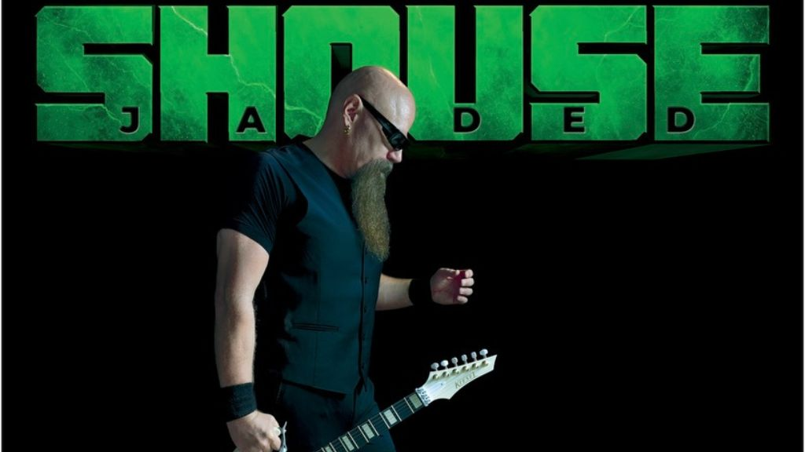

Mike Shouse's Triumphant Return: 'Jaded' Revives the Spirit of Instrumental Rock

The following feature is now included in our online magazine which is also available in print.
Issue #4
Online Magazine | Print MagazineFor more details contact us at: volechomag@gmail.com
A decade and a half is a long time to have been out of sight in the realm of guitar. But when Kentucky bred shredder Mike Shouse finally emerged from hiding, he didn't reappear, he exploded. His new release, Jaded, released through Deko Entertainment, is a sonic boom re-entry that balances on the precipice between technical skill and emotional resonance. It's a living record, grounded in technique but entirely free, and inhabited by some of the most respected figures in guitar lore: Tony MacAlpine, Ron "Bumblefoot" Thal, and Michael Angelo Batio.
Kentucky native, subsequently schooled at Hollywood's Guitar Institute of Technology, Shouse has been among the most innovative and skilled guitarists of his peer group for years. His previous albums, Enter the Soul (2001) and Alone on the Sun (2010), had also been praised for their unflinching combination of melody and precision, absolute proof that virtuosity and storytelling could go hand in hand. Jaded carries on that tradition, a purely instrumental album that is cinematic and intimate at the same time.
"This album is a rebirth for me in many ways," Shouse says. There is a feeling of rebirth all the way through all the songs. You catch it in the mournful sting of Romeo Is Gone, the sweaty thrill of Let's Go, and the jaunty swagger of Smiley Faced Emoji. Even the final offering from the album, Upon Looking Back, carries the repressed assurance of an artist who has worked the highs and lows of artistic life and yet still blazes to perform.
Each visiting guitarist brings his own timbre to Shouse's compositions. Tony MacAlpine's smooth, classically aligned phrasing adds a sense of sophistication. Bumblefoot's erratically shifting tone, bristling with sharp edges and elasticity, sometimes hinting at the brink of mania, keeps the listener on edge. And Batio, the speed master of all time, brings blunt fire to the party, blasting the album's energy into orbit. But be warned: Jaded is Shouse's band from start to finish. The record sounds unified because his performance is the constant, melodic whenever it has to be, explosive whenever it needs to be, and expressive at all times.
The production, skillfully nurtured by Nashville's Billy Decker, provides the album with its glossy yet organic-sounding production. Drummer Charlie Zeleny (and collaborator with Jordan Rudess and Terry Bozzio) and Impellitteri bassist James Amelio Pulli complete the team, delivering the guitar fireworks with rhythmic weight. The result is an album that walks a fine line between technical proficiency and emotional expression, something that few instrumental albums achieve.
Hearing Jaded is somewhat akin to opening a time capsule from the height of the guitar hero days, the Surfing with the Alien and Passion and Warfare period, but it's not retro. Rather, it's respectful of that era's heritage and sounds totally of the moment. There's an undertone of sincerity that prevents it from becoming pastiche. Unlike some instrumental rock albums, which sound like showcases for technique, Shouse's playing is narrative, about loss and renewal and thanks.
Critics elsewhere in the world have already noticed. Iggy Magazine of France has labelled the album "a fresco sound that is both technical and visceral." Music Review World has proclaimed it "a technical wonder and an emotional journey." And Revista Sound Loop of Argentina has stated, "Shouse triumphantly returns with an album that pushes the boundaries of the instrumental and sets a new benchmark for the genre." Such aren't empty encomiums. They’re recognition of an artist who has matured without losing his spark.
For those who live for the thrill of hearing a guitar really talk, Jaded is the reminder of what six strings can do in capable hands. Joe Satriani, Steve Vai, and Paul Gilbert enthusiasts will be home in a nanosecond, but Shouse's melodic, expressive playing carves out his own niche. The tune Bucket of Bolts (see it here
) is the perfect beginning point: all muscular and lighthearted, with a rhythm section enjoying themselves almost as much as the guitarist himself.
Jaded is not a comeback. It's a statement, that real musicianship does not die, that guitar instrumental rock can still thrill, and that sometimes laying it down is the way to come back more powerful. Shouse has forever been a master craftsman, but this record proves he's a writer, employing tone and phrasing to say what words cannot.
Follow Our Playlist For More Music!
This dispatch was last updated on October 14, 2025